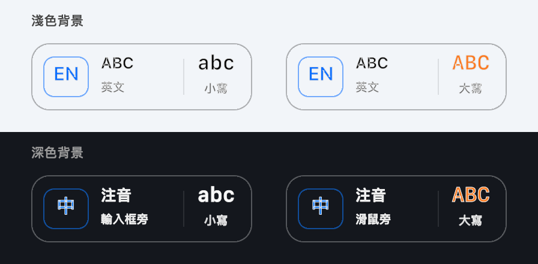

給每天切換中英文的 Mac 使用者
想打中文，卻打出英文？
回中文訊息、輸入英文網址，輸入法切來切去。
打了一串才發現切錯，只好刪掉重打，思緒也被打斷。
e04 在打字處顯示目前的輸入法，讓你早一點發現切錯，少一點重打。
macOS 14+ · 原生 macOS 工具
寫下想法，少一點打斷。
Keep your thoughts flowing.
互動情境示意，非實機錄影
選擇一個輸入狀態，或播放 20 秒示範。
少一點刪掉重打
打字時就看見目前的輸入法，及早發現中英文切錯。
少一點抬頭確認
輸入法與大小寫顯示在打字處，視線留在正在寫的內容。
少一點思緒中斷
浮標不搶焦點、不擋點擊；停下打字約 2 秒，就自動隱藏。
權限說清楚，用得更安心。
App 不保存輸入內容，
也不建立網路連線。

由程式以固定資料繪製
從你的 Mac 開始。
目前提供原始碼建置方式。
可直接安裝的版本準備中。
在專案目錄執行
./script/build_and_run.sh建置與第一次啟動
需要 macOS 14 以上，以及可使用 Swift 6 的開發工具鏈。
取得原始碼後，在專案目錄執行上方指令。建置完成會開啟選單列 App，再依需要允許輔助使用與輸入監控。
App 顯示名稱為 e04；套件檔名仍為 CapsStateKeeper.app，以維持既有更新流程。
目前套件使用本機簽章，重新建置後可能需要重新授權。正式下載包尚在準備。
macOS 14+ · Swift 6